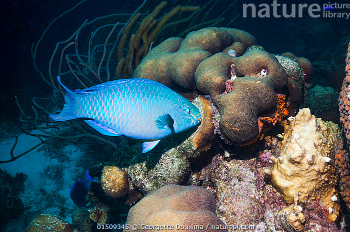
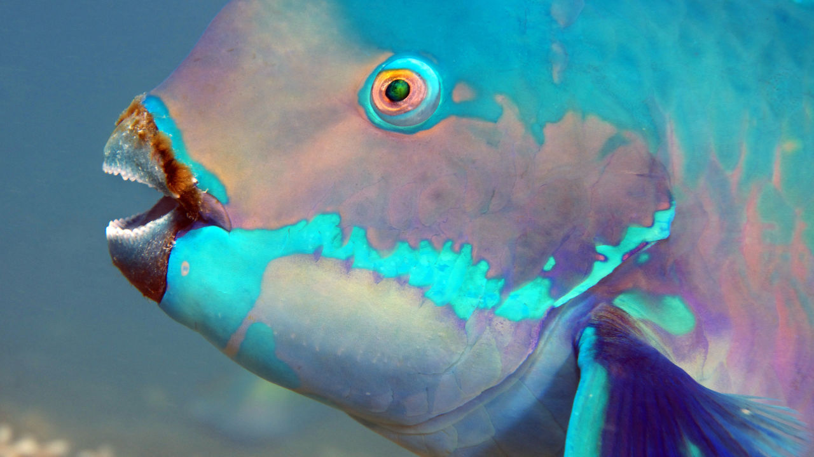
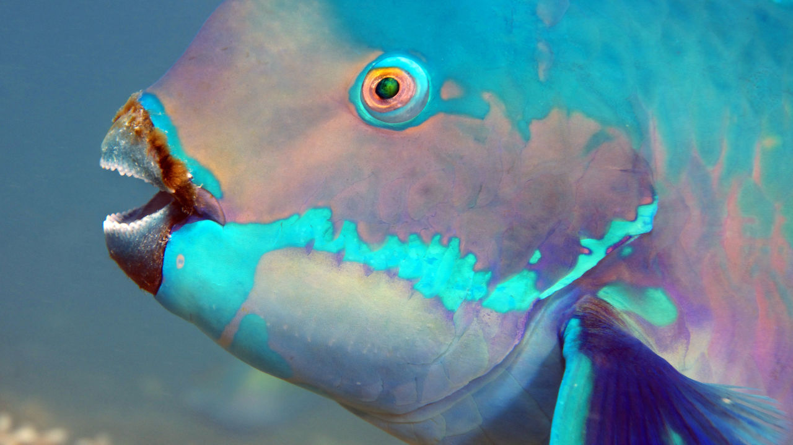

Meet the Fabulous Queen ParrotFish Also Known as Blownose, Blue Chub, Blue Parrot, Blueman, jobblin Crow, Moontail, parrot, Slimy head.
Taxonomic separation of Queen parrotfish:
KINGDOM
Animalia
PHYLUM
Chordata
CLASS
Actinopterygii
ORDER
Labriformes
FAMILY
Scaridae
GENUS
Scarus
SPECIES
Scarus vetula
Table of Content:

(Douwma, n.d.)
Introduction:
Queen parrotfish is a family member of oceanic ray-finned fish, a parrotfish in the family Scaridae. It is famous for its vibrant colors, its appearance and for its crucial ecological impact with coral reef ecosystems.
We can found this at the ridge of tropical West Atlantic ocean and the Caribbean Sea and at Gulf of Mexico. this fish has numerous names which I have listed below the heading such as, blue chub, blueman, moontail, and etc. Adult males and females Queen Parrotfish, they are reddish-brown in color, their color is totally different from their old or we can say their final stage of life's color. In their final stage they obtain bluish-green color. this species is common in the ocean because of its range.
You can listen audio of the parrot fish as well click to play
Appearance:
This Fish is being an attracted because of its diverse colors, we can found from green, blue, yellow, pink, violet,and purple shades of parrotfishes.
They are having a special extended shape of body, brutal head and a strong mouth in the shape of beak to scratch algae and coral from the beneath sea.
They are changing color in their whole life span when they are young they have a different color as they are becoming old their color change with the age.
If we talk about size alike the color their sazy vary fish to fish their are some parrot fishes, they have length of around 12 to 20 inches and few are grow larges and there are few which are shorten it depends on their surroundings that in which environment they are living.
In addition, the Queen parrotfishes make and display different patterns on their body which serves many purposes such as it helps for recognition and mate attraction
Adult fish Old fish
(Bryant, n.d.)
Habitat:
Coral Reef ecosystems:
These fishes are mainly found at the bottom of the ocean where sea corals are present and also algae and many species of marine life. These reefs and species give shelter and appetite to the parrotfish. It also helps to balance the ecosystems because they are also the part of the food chain.
Warm, Tropical Waters:
We can found parrotfish mainly in inhabit warm, tropical waters which are found in the Western AtlanticOcean, as well in Caribbean Sea, the Gulf of Mexico, and in other nearby areas.
Shallow and Clear Waters:
They are present in the reef corals where water is clear where algae and corals can get the sunlight and support to photosynthesis.
these conditions will help them to grow and with the help of that these species and reef coral can make excess food source for the ParrotFish.
Coral and algal Growth:
Queen parrotfish are in the areas where they can find abundant coral and algae growth, as their main survival source is algae and coral. Healthy coral reefs and algae provide them ample food.
Seagrass Beds and Rocky Areas:
As we know now that coral and algae is their main habitat, they are also found on the areas where they can get adjacent habitat from the seagrass and Rocky areas, mostly during their different life stages they change their habitat and places where they used to live and also to save themselves from the predators.
Population of Queen Parrotfish
Year
Population Estimate
Notes
2020
650,124
considered by National Oceanic and Atmospheric Administration (NOAA)
2021
500,000
Estimate based on research in the Caribbean region
Behaviour:
Feeding Behaviour: These fishes are herbivores because their main food source is algae, and other small animals that are found on the reef structure. as they have a beak and jaws that help them to take the algae and corals from the rocks. By eating the algae from the rocks and bottom of the oceans they control the growth of algae and it helps to maintain the ecological-balance.
Diurnal Activity: Queen Parrotfish also do diurnal activities, which means they mainly eat food in the daylight because at that time they seem more active. They spend most of the time on foraging food from the reef, by using their keen senses to find the algae and other helpful food resources.
Grouping behaviour:
These Queen parrotfishes are mainly observed in the groups or as lonely individuals. While locating corals and algae they mainly found alone and sometimes they make little aggregation with other species, extensively at the time to create generation.
Nocturnal Shelting: At the time of night, Queen parrotfish look at the crevices, under ledges, or other protected areas around the reefs. During that time they used to produce mucus or we can say cocoons around their body to protect barrier against the predators and from the parasites while sleeping.
Reproductive Behavior: In the process of reproduction, queen parrotfish involves large spawning aggregations, in that process individuals release the eggs and the sperm simultaneously. their spawning cycle contemporize with the lunar cycle.
Social Interactions: As I have already explained in one of the above paragraphs these parrotfish species used to live in the group or sometimes alone they are making friends from the same species as they are, but sometimes they make friend from the other species which are cleaner fishes and make Interactions with cleaners.


 
